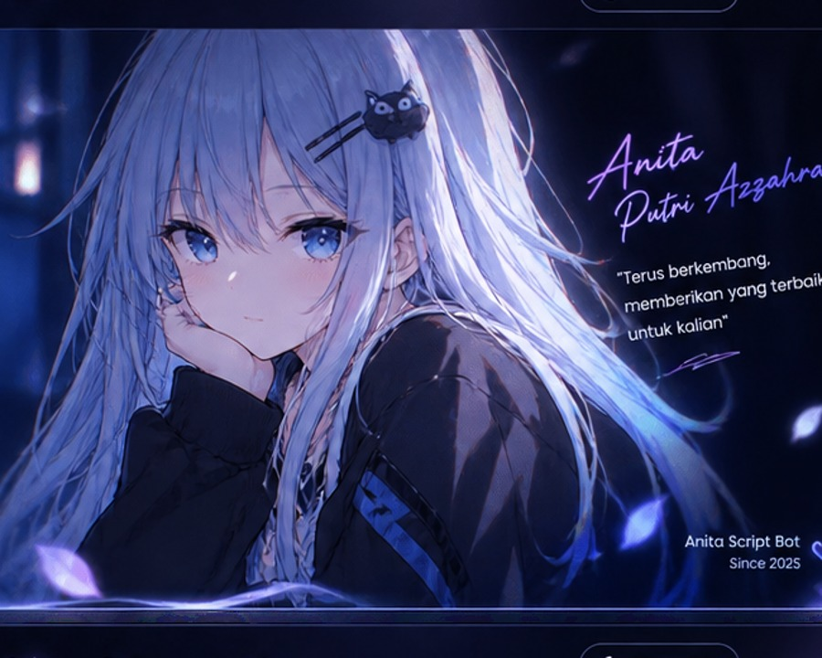

Fokus pada Script
Daftar script dibuat ringkas supaya kamu bisa langsung melihat versi, kompatibilitas Node.js, dan tombol unduh.
Tempat berbagi script bot WhatsApp berkualitas, gratis, dan terus dikembangkan. Dibuat untuk memudahkan kamu menemukan script yang cocok tanpa tampilan yang ribet.

Anita Script Bot menjadi tempat sederhana untuk membagikan berbagai script bot WhatsApp, dokumentasi singkat, dan pembaruan project.
Daftar script dibuat ringkas supaya kamu bisa langsung melihat versi, kompatibilitas Node.js, dan tombol unduh.
Versi baru dapat ditambahkan tanpa mengubah desain keseluruhan website.
Project dan pengembangan website oleh Anita Putri Azzahra.
Lihat daftar script yang tersedia dan pilih versi yang paling sesuai.